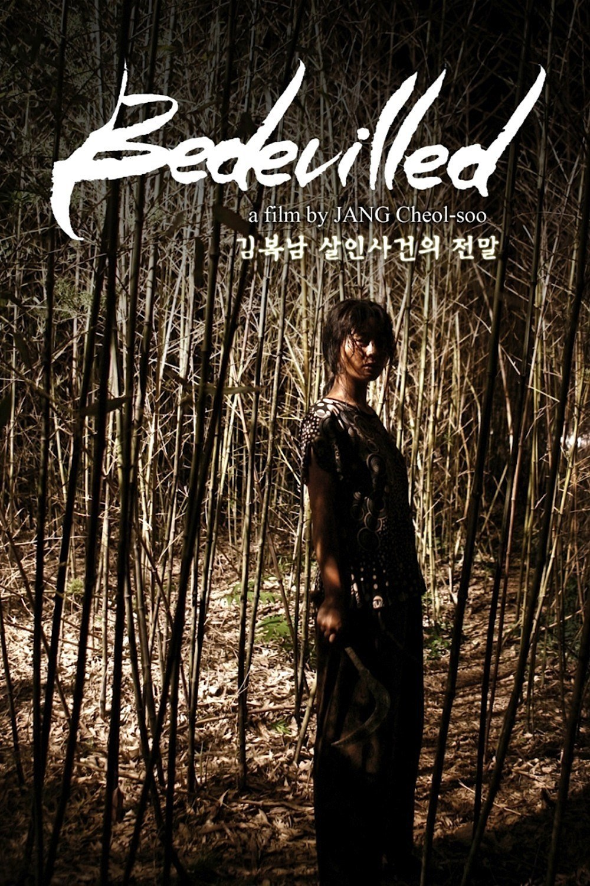

A Criada

Coreia do Sul, anos 1930. Durante a ocupação japonesa, a jovem Sook-hee é contratada para trabalhar para uma herdeira nipônica, Hideko, que leva uma vida isolada ao lado do tio autoritário. Só que Sook-hee guarda um segredo: ela e um vigarista planejam desposar a herdeira, roubar sua fortuna e trancafiá-la em um sanatório. Tudo corre bem com o plano, até que Sook-hee aos poucos começa a compreender as motivações de Hideko.
01/06/2016
Quem Vai Parar a Chuva

No período pós-lei marcial de 1994 em Taiwan, os estudantes fazem protestos. Chi-wei, uma estudante universitária, adere à greve para lutar pela sua liberdade de expressão. Durante o protesto, ela lentamente se sente atraída por Ching, a namorada do líder da greve estudantil.
27/10/2023
A Viagem de Chihiro

Chihiro e seus pais estão se mudando para uma cidade diferente. A caminho da nova casa, o pai decide pegar um atalho. Eles se deparam com uma mesa repleta de comida, embora ninguém esteja por perto. Chihiro sente o perigo, mas seus pais começam a comer. Quando anoitece, eles se transformam em porcos. Agora, apenas Chihiro pode salvá-los.
18/07/2003
Cidade de Deus

Buscapé é um jovem pobre, negro e sensível, que cresce em um universo de muita violência. Ele vive na Cidade de Deus, favela carioca conhecida por ser um dos locais mais violentos do Rio. Amedrontado com a possibilidade de se tornar um bandido, Buscapé é salvo de seu destino por causa de seu talento como fotógrafo, o qual permite que siga carreira na profissão. É por meio de seu olhar atrás da câmera que ele analisa o dia a dia da favela em que vive, onde a violência aparenta ser infinita.
30/08/2002
Ex Drummer

Em um vilarejo belga, um grupo de adolescentes sonha em se tornar estrelas de rock, levando uma vida de drogas, álcool e sexo. O único problema é que os três amigos são deficientes físicos, e ainda não encontraram um baterista. Mas um dia um homem parece o candidato ideal para completar a banda: um escritor de sucesso, sem deficiências físicas. O único problema é que este homem não sabe tocar bateria. Mesmo assim, a banda se forma e começa sua precária trajetória musical, até o momento em que o novo baterista passa a impor a todos as suas regras muito peculiares para lidar com a fama.
31/01/2007
Poor Things

A jovem Bella Baxter é trazida de volta à vida pelo cientista Dr. Godwin Baxter. Querendo ver mais do mundo, ela foge com um advogado e viaja pelos continentes. Livre dos preconceitos de sua época, Bella exige igualdade e libertação.
08/12/2023
Scooby Doo: A Ilha do Espanto
Após a Mistério S/A - formada por Fred , Daphne , Velma , Salsicha e Scooby-Doo - resolver um caso em uma fábrica de brinquedos o grupo se desfaz, pois alguns dos membros não suportavam ver Fred creditando sempre para si os feitos mais difíceis. Eles ficam sem se ver por dois anos, até Emile Mondavarious (Rowan Atkinson), o dono de um parque temático chamado "A Ilha do Espanto", contratar cada um deles para resolver um mistério envolvendo o parque. Porém nenhum deles sabia que cada um dos ex-parceiros também fora contratado, com o grupo se encontrando na hora do embarque e concordando em trabalhar juntos mais uma vez. Ao chegarem à Ilha do Espanto eles são recebidos por Mondavarious, que lhes diz acreditar que alguém jogou uma praga na ilha, pois os jovens chegam normais mas ao saírem são pessoas bem diferentes, muito mais sérios e agressivos. Daphne, Velma e Fred iniciam uma disputa particular para ver quem resolve o caso primeiro, sem imaginarem quem está por trás dos acontecimentos da Ilha do Espanto.
04/10/2002
Bedevilled
Após testemunhar uma tentativa de homicídio, Hae-won se sente ameaçada e decide sair de Seul, se refugiando numa pequena ilha que conhecera com os avós na infância. Mas nada na ilha será como antes, e ela terá que enfrentar uma realidade assustadora.
02/09/2010